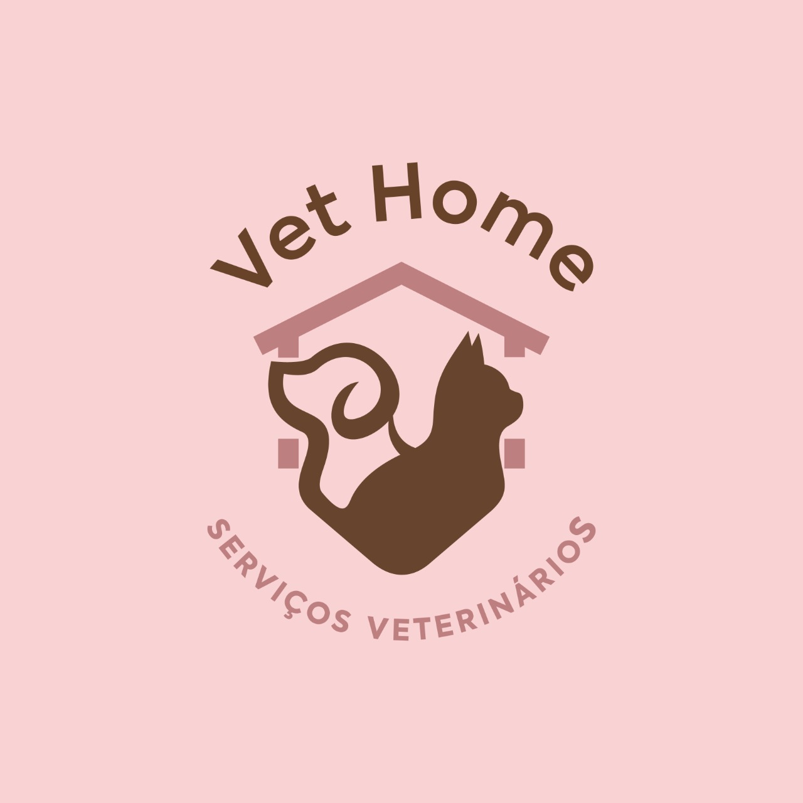

Escolha o melhor
para o seu Pet
NOSSOS SERVIÇOS
SOBRE NÓS
Cuidado com carinho em cada etapa
A Vet Home reúne atendimento a domicílio, exames e vacinas para cuidar da saúde e do bem-estar do seu pet.
Voltar ao inícioA EXPERIÊNCIA DE QUEM CONFIA NA DRA. GABRIELA
Avaliações
Veja avaliações publicadas nos perfis da Dra. Gabriela Falcão. Cada resumo leva à página original da plataforma.
5,0
de 5
196 avaliações nas plataformas
Média ponderada pelas quantidades exibidas em cada plataforma. Consulta em 16/11/2026; os dados podem mudar.
Petlove
Nota da plataforma: 5,0 de 5 · 177 avaliações
PetLife
Nota da plataforma: 5,0 de 5 · 19 avaliações
Bitutz R.★★★★★
Elogia a atenção e a paciência com seus dois gatos e a comodidade de receber o atendimento em casa.
Resumo · PetLife
Kelly R.★★★★★
Destaca a atenção com o pet e a confiança que sentiu no atendimento.
Resumo · PetLife
Maria F.★★★★★
Elogia a dedicação, as orientações e o acompanhamento cuidadoso da veterinária.
Resumo · PetLife
Os textos acima são resumos das avaliações públicas, não citações literais. A nota e a quantidade são referências das plataformas e podem ser atualizadas por elas.
Voltar ao início